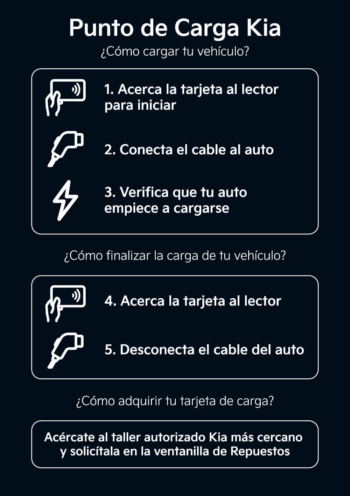

Electrolineras Ecuador
En nuestra base de datos tenemos un total de 46 puntos de carga en Distrito Metropolitano de Quito, Ecuador. Electromaps es la mejor manera de encontrar el cargador de vehículos eléctricos más cercano para tu coche en Distrito Metropolitano de Quito. Nuestros puntos de carga también incluyen fotos y comentarios compartidos por nuestra comunidad, compuesta por miles de usuarios muy participativos, que puntúan los puntos de carga y ofrecen información útil para crear la mejor experiencia para los conductores de vehículos eléctricos.